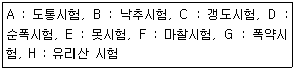
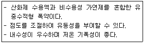
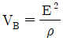
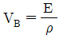
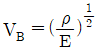
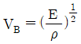
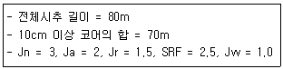
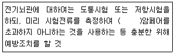

화약류관리기사 (2019-09-21 기출문제)
1과목: 일반화약학
1. 화약의 맹도를 측정하는 시험은?
- 드트리쉬법
- 메테강법
- 이온갭법
- 캐스트법
(정답률: 87%)

2. 화약의 특성에 대한 설명으로 옳은 것은?
- 무연화약은 질산염을 주성분으로 한 화약이다.
- 흑색화약은 과염소산염을 주성분으로 한 화약이다.
- 카알릿트는 혼합화약이다.
- 화합화약류는 가연체와 조연제가 혼합된 혼합물이다.
(정답률: 69%)
3. 콤포지션 A, B, C에 공통적으로 들어가는 화약은?
- 헥소겐
- 펜트리트
- 티엔티
- 테트릴
(정답률: 77%)
4. 화약휴의 동적(파괴)효과를 측정하는 시험방법은?
- 연주시험
- 내화시험
- 기폭감도시험
- Hess 맹도시험
(정답률: 87%)
5. 붉은 불꽃을 발생하므로 위험신호를 알리는데 사용하는 신호염관(Fire signal)의 주성분은?
- 과염소산암모늄+질산바륨
- 염소산암모늄+알루미늄
- 과염소산암모늄+질산스트론튬
- 질산암모늄+질산바륨
(정답률: 86%)
6. 다음 중 단위 kg당 폭발열이 큰 것부터 작은 것 순서로 나열된 것은? (단, RDX는 헥소겐, Ng는 니트로클리콜, NG는 니트로글리세린, TNT는 트리니트로톨루엔이다.)
- Ng＞NG＞RDX＞TNT
- Ng＞RDX＞NG＞TNT
- TNT＞RDX＞NG＞Ng
- TNT＞RDX＞Ng＞NG
(정답률: 75%)
7. 다음 화약류시험 주 감도 시험을 옳게 나열한 것은?

- A, B, C
- B, D, F
- D, E, H
- D, G, H
(정답률: 87%)
8. 색, 맛, 냄새가 없고 미세한 분말로 아세톤에 녹는 화약은?
- TNT
- Picric Acid
- Tetryl
- RDX
(정답률: 53%)
9. 기폭약으로 사용되는 아지화납의 결정구조는?
- α형
- β형
- γ형
- δ형
(정답률: 76%)
10. 다음에서 설명하는 폭약은 무엇인가?

- 에멜젼폭약
- 암모날폭약
- 초안유제폭약
- 이온교환폭약
(정답률: 94%)
11. 순폭도에 대한 설명 중 틀린 것은?
- 약포경이 굵어지면 순폭도가 크게 된다.
- 일반적으로 수중 순폭도가 공기 중 보다 크다.
- 온도가 상승하면 순폭도가 커지는 경향이 있다.
- 약포 사이에 암분이 존재하면 순폭도가 크게 된다.
(정답률: 77%)
12. 화약류에 대한 설명으로 틀린 것은?
- 슬러리 폭약은 질산암모늄과 물을 주성분으로 하고 가연성물질을 배합한다.
- ANFO 폭약은 흡습성이 있어 수공에서는 사용하기 어렵다.
- 헥소겐은 제조 시 헥사메틸렌테트라민을 황산으로 황산화하여 제조한다.
- 화약류에는 동적작용과 정적작용이 있다.
(정답률: 69%)
13. 흑색화약의 제조 원료가 아닌 것은?
- 목탄
- 황
- 셀룰로오스
- 질산칼륨
(정답률: 84%)
14. 한국산업표준(KS)에서 정한 도화선 품질시험항목이 아닌 것은?
- 점화력
- 내수성
- 연소초시
- 발화점
(정답률: 73%)
15. 니트로글리세린 1kg이 폭발할 때 발생하는 가스의 부피는 표준상태를 기준으로 몇 L인가?
- 615L
- 715L
- 815L
- 915L
(정답률: 85%)
16. 폭굉(暴轟)과 폭연(爆練)의 연소속도 관계를 옳게 나타낸 것은?
- 폭굉+폭연=0
- 폭굉=폭연
- 폭굉＜폭연
- 폭굉＞폭연
(정답률: 89%)
17. 질산암모늄을 주성분으로 한 ANFO 폭약의 단점은?
- 제조방법이 매우 복잡하다.
- 전폭약이 필요하다.
- 발파현장에서 제조ㆍ사용할 수 없다.
- 마찰이나 충격에 대한 감도가 민감하다.
(정답률: 80%)
18. 뇌관의 기폭약으로 사용되는 화약은?
- RDX
- PETN
- Tetryl
- DDNP
(정답률: 84%)
19. TNT 1g이 폭발할 때 산소 평형은 몇 g인가?
- -0.74
- +0.20
- -0.22
- +0.39
(정답률: 86%)
20. 다음 중 일반적으로 도폭선의 심약으로 사용하지 않는 화약은?
- 펀트라이트(PETN)
- 헥소겐(RDX)
- 티엔티(TNT)
- 흑색화약(BP)
(정답률: 81%)
2과목: 발파공학
21. 발파 후 잔류약의 발생 원인으로 성격이 나머지와 다른 것은?
- 뇌관위치의 부적절
- 분말계 폭약의 비중 과대
- 장기저장에 의한 폭약의 변질
- 흡습에 의한 폭약의 고체화 및 동결
(정답률: 59%)
22. 다음 중 전색물의 조건으로 옳지 않은 것은?
- 구입 및 운반이 쉬운 재료
- 공벽과의 마찰이 작은 재료
- 폭약의 기폭 시 연소되지 않는 재료
- 압축률이 작지 않아서 단단히 다져질 수 있는 재료
(정답률: 60%)
23. 터널 대구경 평형 심발발파 시 무장약공 4공을 사용할 경우 환산직경은? (단, 무장약공의 지름은 102mm이다.)
- 204mm
- 255mm
- 400mm
- 408mm
(정답률: 52%)
24. 옥타브랜드의 중심주파수가 500Hz, 1000Hz, 2000Hz일 때의 청력손실이 각각 40dB, 30dB, 40dB 이라면 평균청력손실은 얼마인가?
- 35dB
- 37.5dB
- 38.3dB
- 40dB
(정답률: 40%)
25. 최소저항선을 2m로 하여 시험발파를 수행한 결과 표준장약량이 4kg이었다. 같은 장소에서 최소저항성은 3m로 변경할 경우 장약량은 얼마인가? (단, Lares의 발파규모 수정식을 사용할 것)
- 5.6kg
- 7.5kg
- 9.6kg
- 11.5kg
(정답률: 47%)
26. 균질한 암석의 내부에 구상의 장약실을 만들고, 이것을 폭발시켰다고 가정한다면 암석내부의 파괴상황은 약실로부터 분쇄-소괴-대괴-균열-진동층으로 위력권을 분류할 수 있다. 이러한 위력권의 범위를 결정하는 요소 중 가장 거리가 먼 것은?
- 사용하는 폭약의 종류와 장악량
- 피폭파물의 성질과 조직
- 주벽을 구성하는 물질의 파괴항력
- 지발시차
(정답률: 52%)
27. 균질한 발파암반 경계면을 매끄럽게 하기 위하여 마무리 발파(trim blasting)를 실시하려한다. 단위 길이당 장악량 168.75g/m를 사용할 경우 적정한 저항선은 얼마인가?
- 93.6cm
- 86.3cm
- 72.2cm
- 65.2cm
(정답률: 46%)
28. Hauser의 발파 기본식에 대한 설명으로 옳은 것은?
- 발파계수는 암석의 성질, 장전방법, 폭약종류, 전색상태에 따라 결정된다.
- 발파계수 C의 값은 누두공의 크기와 형상과는 관계가 없다.
- 원뿔모양인 누두공의 부피 V는 최소저항선을 W라고 할 때 V3=W3이 된다.
- 표준발파의 장악량은 누두공의 부피의 세제곱에 비례한다.
(정답률: 38%)
29. 발파진동 측정방법에 대한 설명으로 옳지 않은 것은? (단, 소음ㆍ진동 공정시험기준에 의한다.)
- 진동픽업(pick-up)의 설치장소는 옥내지표를 원칙으로 하고 복잡한 반사, 회절현상이 예상되는 지점은 피한다.
- 진동픽업은 수직방향 진동레벨을 측정할 수 있도록 설치한다.
- 측장점은 부지경계선 중 피해가 예상되는 장소로서 진동레벨이 높을 것으로 예상되고 지점을 택하여야 한다.
- 측정진동레벨은 발파진동이 지속되는 기간 동안에 측정하고, 배경진동레벨은 발파진동이 없을 때 측정하여야 한다.
(정답률: 47%)
30. 지연 시차에 따른 발파 방법의 설명으로 옳지 않은 것은?
- 비산의 우려가 있는 지역에서는 시차가 짧은 MS 발파법이 적당하다.
- 제발발파를 하게 되면 공들이 서로 보강작용을 하게 되어 발파 함량이 많아진다.
- MS 발파법은 인접 발파공을 압괴하거나 발파선을 단선시키는 일이 드믈다.
- MS 발파법은 분진의 발생량이 적다.
(정답률: 46%)
31. 황경부에서 정한 생활소음ㆍ진동의 규제 기준에 의하면 주거지역일 때 공사장에서 발생하는 소음은 아침시간(⑤:00~07:00)에 얼마로 제한되어 있는가? (단, 공휴일은 제외한다.)
- 50dB(A) 이하
- 60dB(A) 이하
- 65dB(A) 이하
- 70dB(A) 이하
(정답률: 45%)
32. 다음 폭약 중 폭약계수(e) 값이 가장 적은 것은?
- ANFO
- 흑색화약
- 초안포약
- 젤라틴 다이너마이트
(정답률: 47%)
33. 터널발파 시 사용되는 경사공 심빼기와 평행공 심빼기에 대한 설명으로 옳지 않은 것은?
- 경사공 심빼기는 터널 단면이 크지 않고, 장공 천공을 위한 장비 투입이 어려운 경우에 많이 사용된다.
- 경사공 심빼기의 경우 장악량이 많거나 폭약의 위력이 너무 강하면 파쇄된 암석이 막장면으로 밀려나오지 않고 소결현상을 일으켜 발파를 실패할 수 있다.
- 평행공 심빼기는 장공 천공이 가능하며 1회 굴진 거리를 경사공 심빼기보다 크게 할 수 있다.
- 평행공 심빼기의 경우 파석의 비산거리가 비교적 작고 막장 부근에 집중되므로 파석처리 편리하다.
(정답률: 56%)
34. 발파에 의한 파괴에 대한 설명으로 틀린 것은?
- 누두공의 모양과 크기는 암반의 종류와 폭약의 위력 및 메지의 정도에 따라 달라진다.
- 자유면의 쪽은 저항이 크므로 발파효과는 자유면의 수에 따라 증가한다.
- 표준 발파의 장악량은 누두공의 부피에 비례한다.
- 암석계수(g)는 암석 약 1m3를 발파할 때 필요로 하는 표준 장악량이다.
(정답률: 50%)
35. 발파현장에서 암반 천공작업에 의해 발생되는 음향파워레벨이 130dB이다. 수음점이 천공작업을 실시하는 장소에 완전히 노출되어 있으면 평지이다. 음원에서 50m 이격된 거리에 있는 수음점에서의 음압레벨은? (단, 음원은 점음원이며, 반구면파로 간주한다.)
- 53.94dB
- 63.94dB
- 73.94dB
- 88.02dB
(정답률: 43%)
36. 측벽효과(Channel effect)에 대한 설명으로 옳지 않은 것은?
- 천공경을 통해 충격파가 선행되어 공저의 폭약을 강압함으로써 발생한다.
- 공저의 폭약은 고비중이 되고 사압현상이 발생하여 잔류약이 남는 현상이다.
- 고성능(고폭속) 폭약의 사용 시에 특히 현저하게 발생한다.
- 방지대책으로는 공격과 약경의 차이를 줄이고 밀장전을 실시한다.
(정답률: 47%)
37. 심발발파법 중 V-cut 청공 씨 천공장이 1.5m 일 때 기저장약장은 일반적으로 얼마인가?
- 30cm
- 50cm
- 80cm
- 100cm
(정답률: 50%)
38. 계단식 발파 시 백브레이크(Back Break)를 줄이기 위한 방법으로 틀린 것은? (단, w는 최소저항선이다.)
- 막장을 수직으로 하지 않고 경사를 둔다.
- 천공간격을 0.8w~1.0w 정도로 약간 좁게 한다.
- 전색의 길이는 1.0w~1.5w 정도로 하며, 지나치게 길게 하지 않는 것이 좋다.
- 전회 발파의 파쇄암을 벤치 하부에 일부 두는 것이 좋다.
(정답률: 57%)
39. 구조물 발파해체를 하고자 한다. 기둥의 수평단면적이 500×500mm일 때 기둥 내 1공에 대한 장약향은 얼마인가? (단, 발파계수는 0.2kg/m2이다.)
- 40g
- 50g
- 60g
- 70g
(정답률: 52%)
40. 뇌관에 의한 폭약의 기폭작용에 해당하지 않는 것은?
- 관체 파편에 의한 작용
- 뇌관 폭발시에 가스 충동에 의한 작용
- 백금전교의 발화에 사용되는 전기에 의한 작용
- 폭발열이 폭약에 직접 전달되어 폭약을 가열하는 작용
(정답률: 56%)
3과목: 암석역학
41. 소성변형률이 증가함에 따라 항복응력이 커지는 현상은 무엇인가?
- 다일러턴시(dilatancy)
- 변형률경화(strain-hardening)
- 변형률연화(strain-softening)
- 탄소성거동(elasto-plastic behavior)
(정답률: 49%)
42. 터널설계와 관련하여 불연속면의 주향과 터널의 굴진방향이 다음 중 어떤 경우일 때 굴착작업의 안정성에 가장 유리한가?
- 불연속면의 주향이 터널의 굴진방향과 평행하고, 경사각도가 낮을 때
- 불연속면의 주향이 터널의 굴진방향과 평행하고, 경사각도가 높을 때
- 불연속면의 주향이 터널의 굴진방향과 수직하고, 경사방향으로 굴착할 때
- 불연속면의 주향이 터널의 굴진방향과 수직하고, 경사의 반대 방향으로 굴착할 때
(정답률: 50%)
43. 가늘고 긴 봉을 통과하는 종파는 측면방향으로 움직임이 자유스럽기 때문에 영률 E와 암석이 밀도 ρ만으로 나타낸다. 이 종파속도 VB(bar velocity)의 식을 올바르게 나타낸 것은?




(정답률: 46%)
44. Creep시험에서 변형률속도가 일정한 구간에 해당하는 것은?
- 1차 Creep
- 2차 Creep
- 3차 Creep
- 4차 Creep
(정답률: 57%)
45. 일축압축시험 시험편 양끝단과 가압판과의 사이에 발생하는 마찰효과(end effect)에 대한 설명으로 틀린 것은?
- 마찰효과에 의해 시험편 양끝단에는 전단응력이 발생한다.
- 시험편 내 마찰효과가 작용하는 부분이 상대적으로 클수록 강도는 감소한다.
- 마찰효과로 인해 시험편 양끝단에 가해지는 압축응력은 주응력이 아니다.
- 마찰효과의 영향을 감소시키기 위해서는 시험편의 길이/직경의 비가 최소한 2 이상 되어야 한다.
(정답률: 48%)
46. 45°의 경사면을 갖는 암반사면에서 바닥으로부터 수직으로 30m 높이에서 낙석이 발생하였다. 이 때 낙석의 질량이 400kg이라 할 때, 최종적인 낙석에너지(kJ)는? (단, 중력가속도(g)는 9.8m/s2, 낙석의 등가마찰계수(μ)sms 0.⑤, 회전에너지계수(β)는 0.1이다.)
- 23KJ
- 123KJ
- 223KJ
- 323KJ
(정답률: 47%)
47. 암반내부에 축적되는 탄성변형률 에너지가 일시에 방출되면서 굴착된 갱도가 붕괴되는 현상과 관계가 없는 것은?
- 화성암이 퇴적암보다 발생빈도가 크다.
- 조립질 암석이 세립질 암석보다 발생빈도가 크다.
- 방출되는 에너지가 클수록 발생빈도는 증가한다.
- 암석의 강도가 크고 취성이 클수록 발생빈도는 증가한다.
(정답률: 48%)
48. 슈미트 해머(Schmidt hammer)의 반발치와 가장 관련이 깊은 암석의 특성은?
- 압축강도
- 탄성계수
- 균열정도
- 반발점착력
(정답률: 41%)
49. 터널설계와 관련한 현장시험 중에서 현지암반에 작용하는 초기응력을 측정하는 시험법은?
- 투수시험
- 점하중시험
- 수압파쇄시험
- 공내재하시험
(정답률: 55%)
50. 어느 교각 기초가 높은 하부 암반은 몬모릴로나이트 성분의 점토가 관입된 불연속면이 발달해 있다. 시간 경과 후 지하수가 기초 암반에 침투하였을 경우 발생 가능한 암반 거동은?
- 점토의 팽창(Swelling)
- 점토의 압착(Squeezing)
- 절리의 피로파괴(Fatigue Failure)
- 항복 후 강도 증가(Strain Hardening)
(정답률: 54%)
51. 다음 불연속면의 특성 중 암반과 불연속면의 투수성에 가장 큰 영향을 미치는 것은?
- 간극
- 방향성
- 거칠기
- 벽면강도
(정답률: 49%)
52. 평면응력(plane stree)상태에서 σx=30MPa, σy=10MPa일 때, 변형률 ϵy는? (단, 영률(E)은 2×104MPa, 푸아송 비(v)는 0.25이다.)
- 1.25×10-4
- 1.77×10-4
- 2.43×10-4
- 2.85×10-4
(정답률: 40%)
53. 다음 중 암반의 변형성을 측정하기 위해 실시하는 시험은?
- 수압파쇄시험
- 압열인장시험
- 루전(Lugeon)시험
- 보어홀 잭(borehole jack)시험
(정답률: 43%)
54. 삼축압축시험에서 구속압(Confining pressure)의 증가에 따른 암석 시험편의 변형거동에 대한 설명으로 틀린 것은?
- 최대강도가 증가한다.
- 변형률 연화현상(strain-softening)이 나타난다.
- 취성거동에서 연성거동으로 전이현상이 발생한다.
- 최대강도 이후의 급격한 파괴가 감소한다.
(정답률: 43%)
55. 복합체의 역학적 모형 중 대시포트(dashpot)를 포함하지 않는 것은?
- Kelvin 물체
- Burgers 물체
- Maxwell 물체
- St. Venant 물체
(정답률: 53%)
56. 다음 중 중간주응력을 고려한 암석 파괴이론은?
- Tresca 이론
- von Mises 이론
- Hoek-Broen 이론
- Mohr-Coulomb 이론
(정답률: 56%)
57. 암석 내에 포함된 균열이 전파되기 쉬운 정도를 표현하는 값은?
- 균열계수
- 파괴인성
- 응력확대계수
- 변형률 에너지
(정답률: 45%)
58. Barton의 경험적 전단강도식에서 절리면의 거칠기 특성을 반영하는 상수는?
- JCS
- JRC
- 전단강성(ks)
- 기본마찰각(øb)
(정답률: 54%)
59. 60°스트레인 로제트(strain rosette)를 사용하여 변형률을 측정한 결과 ϵ(θ=0°)=ϵ1=a, ϵ(θ=60°)=ϵ2=2a, ϵ(θ=120°)=ϵ3=3a이다. ϵ1의 방향이 x축 방향과 같을 때, x축에 수직인 y축 방향의 변형률을 2차원 변형해석으로 구하면 얼마인가?
- a
- -a
- 2a
- 3a
(정답률: 31%)
60. Q-system의 평가요소에 대하여 아래 표와 같은 결과를 얻었다. RMR과 Q의 관계식을 이용하여 구한 RMR값은? (단, RMR과 Q의 관계식은 Bieniawski(1976)의 제안식을 이용한다.)

- 43.5
- 53.0
- 63.5
- 85.2
(정답률: 38%)
4과목: 화약류 안전관리 관계 법규
61. 화약류저장소에 저장중인 다이나마니트에서 니트로글리세린이 스며나와 마루바닥이 오염된 경우의 처리 방법으로 가장 옳은 것은?
- 증류수 200밀리리터에 염화나트륨 200그램을 녹이고, 알코올 1리터를 혼합한 액체로 니트로글리세린을 분해시키고, 마른걸레로 닦아낸다.
- 증류수 200밀리리터에 수산화나트륨 50그램을 녹이고, 글리세린 1리터를 혼합한 액체로 니트로글리세린을 분해시키고, 마른걸레로 닦아낸다.
- 물 150밀리리터에 염화나트륨 100그램을 녹이고, 알코올 1리터를 혼합한 액체로 니트로글리세린을 분해시키고, 마른걸레로 닦아낸다.
- 물 150밀리리터에 수산화나트륨 100그램을 녹이고, 알코올 1리터를 혼합한 액체로 니트로글리세린을 분해시키고, 마른걸레로 닦아낸다.
(정답률: 56%)
62. 도목업자가 사업을 위해 화약류저장소 외의 장소에 저장할 수 있는 화약류의 수량으로 옳은 것은? (단, 화약류저장소가 있으며, 6개월 이내에 종료하는 사업의 경우)
- 공업용뇌관 및 전기뇌관 1000개
- 폭약 5kg
- 화약 10kg
- 도폭선 100m
(정답률: 43%)
63. 다음은 화약류의 취급에 관한 사항이다. ()안에 알맞은 내용은 무엇인가?

- 1
- 0.1
- 0.01
- 0.001
(정답률: 56%)
64. 다음 중 운반표지를 하지 않고 운반할 수 있는 경우가 아닌 것은?
- 10kg 이하의 화약
- 1만개 이하의 총용뇌관
- 1천개 이하의 미진동파쇄기
- 1만개 이하의 실탄, 공포탄
(정답률: 28%)
65. 화약류 1급 저장소에는 화약류를 저장할 수 있는 일정한 저장량의 한도가 있다. 총용되관은 몇 개까지 저장할 수 있는가? (단, 부득이한 사유로 허가관청의 허가를 받는 경우를 제외한다.)
- 5000만개
- 3000만개
- 1000만개
- 500만개
(정답률: 56%)
66. 화약류저장소설치자가 자체안전점검계획을 2회 이상 위반했을 경우 행정처분기준으로 맞는 것은?
- 1월 효력정지
- 3월 효력정지
- 6월 효력정지
- 허가 취소
(정답률: 36%)
67. 총포ㆍ도검ㆍ화약류 등의 안전관리에 관한 법률상 별도로 정한 경우를 제외하고는 허가없이 화약류를 소지하여서는 아니 된다. 다음 중 법률에서 정한 제외기준으로 틀린 것은?
- 행정안전부령이 정하는 사람이 화약류를 소지하는 경우
- 제조업자가 자신이 제조한 화약류를 소지하는 경우
- 판매업자가 화약류를 소지하는 경우
- 화약류의 양수허가를 받은 사람이 그 화약류를 소지하는 경우
(정답률: 49%)
68. 화약류 운반용 축전지차의 구조의 기준으로 옳지 않은 것은?
- 차바퀴에는 고무타이어를 사용할 것
- 적재함 또는 짐받이 아래면과 차축과의 사이에는 적당한 완충장치를 할 것
- 축전치는 진동에 의한 영향을 받지 아니하는 것으로 하고, 사용전압은 50볼트 이하로 할 것
- 전기배선은 캡타이어케이블을 사용하여 배선사이 및 배선과 차체사이에 전기가 잘 통하도록 고정시킬 것
(정답률: 62%)
69. 총포, 도검, 화약류 등의 안전관리에 관한 법률상 지상에 설치하는 3급저장소의 위치, 구조 및 설비의 기준으로 옳은 것은?
- 저장소의 앞면의 벽은 두께 20cm 이상의 철근콘크리트로 해야 한다.
- 저장소의 주위에는 간이흙둑을 설치할 수 없다.
- 지붕은 목재를 사용하는 등 전기가 통하지 아니하고 폭발에 견딜 수 있는 견고한 구조로 하여야 한다.
- 화약 또는 폭약과 화공품을 동시에 저장하기 위한 격벽을 보강콘크리트 블록으로 할 경우 두께가 40cm 이상이어야 한다.
(정답률: 30%)
70. 화약류 판매업자가 공공의 안녕질서를 해할 염려가 있다고 믿을 만한 상당한 이유가 있어 이에 따른 대선 명령을 했으나 3회 위반했을 경우 행정처분기준은?
- 허가취소
- 6월 효력정지
- 3월 효력정지
- 1월 효력정지
(정답률: 26%)
71. 재해의 예방상 필요하다고 인정되는 때에 화약류의 소유자에게 안정도시험을 실시하도록 명할 수 있는 사람은?
- 경찰서장
- 지방경찰청장
- 시ㆍ도지사
- 행정안전부장관
(정답률: 63%)
72. 화약류관리보안책임자의 감독업무에 해당되지 않는 것은?
- 저장소의 위치ㆍ구조 및 설비가 규정에 의한 허가를 받지 아니하고 변경되는 일이 없도록 할 것
- 화약류 저장상의 취급 또는 저장소의 위치ㆍ구조 및 설비가 기준에 적합하고 또한 적합하게 유지되도록 할 것
- 저장소가 인근의 화재 그 밖의 사정으로 위험상태에 있거나, 화약류의 안전도에 이상이 있을 때에는 응급조치를 지휘할 것
- 제조시설 및 제조방법이 기준에 적합하고 또한 적합하게 유지되도록 할 것
(정답률: 52%)
73. 화약류 안정도시험에 대한 설명으로서 옳지 않은 것은?
- 제조일을 모르고 질산에스텔 성분이 들어있지 아니한 화약은 소지한 때부터 매 2년마다 유리산 시험을 하되, 6시간 이내에 청색 리트머스 시험지가 전면 적색으로 변하는 것을 가영시험을 해야한다.
- 화공품으로서 제조일로부터 3년이 지난 것은 안정도시험을 해야 한다.
- 화공품으로서 제조일이 분명하지 아니한 것은 안정도 시험을 해야 한다.
- 질산에스텔 성분이 들어있는 화약에 있어서 유리산시험 시간이 6시간 이상인 것은 안정성이 있는 것으로 한다.
(정답률: 49%)
74. 화약류 운반방법의 기술상의 기준으로 옳은 것은? (단, 운반신고를 하지 아니하고 운반할 수 있는 화약류는 제외한다.)
- 화약류의 운반은 자동차에 의하여야 하며 300킬로미터 이상의 거리를 운반하는 때에는 운송인은 도중에 운전자를 교체할 수 있도록 예비운전자 1명 이상을 태울 것
- 야간이나 앞을 분간하기 힘든 경우에 주차하고자 하는 때에는 차량의 전방과 후방 30미터 지점에 적색등불을 달 것
- 화약류를 실은 차량이 서로 진행하는 때(앞지르는 경우를 제외한다.)에는 100미터 이상, 주차하는 때에는 50미터 이상의 거리를 둘 것
- 뇌홍 및 뇌홍을 주로 하는 기폭약은 수분 또는 알코올분이 20퍼센트 정도를 머금은 상태로 운반할 것
(정답률: 56%)
75. 총포ㆍ도검ㆍ화약류 등의 안전관리에 관한 법률상 용어의 정의로 틀린 것은?
- 공실이란 화약류의 제조작업을 위해 제조소 안에 설치된 건축물을 말한다.
- 위험공실이란 발화 또는 폭발할 위험이 있는 공실을 말한다.
- 정체량이란 동일공실에 저장된 화약류의 현재 수량을 말한다.
- 보안물건이란 화약류의 취급상의 위해로부터 보호가 요구되는 장비ㆍ시설 등을 말한다.
(정답률: 62%)
76. 다음 중 화약류 판매업자의 결격사유 기준으로 옳지 않은 것은?
- 금고 이상의 형의 선고를 받고 그 집행이 끝나거나 집행을 받지 아니하기로 확정된 후 3년이 지나지 아니한 사람
- 금고 이상의 형의 집행유예를 선고받고 그 유예기간이 끝난 날부터 2년이 지나지 아니한 사람
- 20세 미만인 사람
- 파산선고를 받고 복권되지 아니한 사람
(정답률: 53%)
77. 화약류 발파의 기술상의 기준에 따르면 도화선 1개의 길이가 1.5m 이상인 때 동일인의 연속점화수는?
- 5발 이하
- 10발 이하
- 13발 이하
- 17발 이하
(정답률: 55%)
78. 화약류저장소의 위치ㆍ구조 및 설비를 허가 없이 임의로 변경하였을 경우 벌칙은?
- 10년 이하의 징역 또는 2천만원 이하의 벌금형
- 5년 이하의 징역 또는 1천만원 이하의 벌금형
- 3년 이하의 징역 또는 700만원 이하의 벌금형
- 2년 이하의 징역 또는 500만원 이하의 벌금형
(정답률: 42%)
79. 폭약 200톤을 저장하는 수중저장소가 있다. 제3종 보안물건과의 보안거리 기준으로 옳은 것은?
- 200m 이상
- 150m 이상
- 100m 이상
- 50m 이상
(정답률: 36%)
80. 화약류의 정체 및 저장에 있어 폭약 1톤에 해당하는 화공품의 수량으로 옳은 것은?
- 신관 또는 화관 5만개
- 미진동파쇄기 10만개
- 공업용되관 또는 전기뇌관 200만개
- 신호뇌관 30만개
(정답률: 60%)
5과목: 굴착공학
81. 터널의 수평분할 굴착공법에 해당하지 않는 것은?
- 가인버트 공법
- 다단벤치 컷 공법
- 미니벤치 컷 공법
- 측벽 선진도갱공법
(정답률: 49%)
82. 다음 중 터털시공 시 방수공에 대한 설명으로 옳지 않은 것은?
- 지하수위 보다 깊은 터널에서는 지하수용출을 완전히 막을 수 있는 방수공을 채택하여야 한다.
- 방수공은 면상 방수공과 선상 방수공으로 대별할 수 있고 선상 방수공은 뿜칠방식과 시트 방식으로 나뉜다.
- 방수 시트는 콘크리트 타설 시에 파손되지 않는 강도 및 내구성, 시공성이 좋은 것을 선정하여야 한다.
- 복공 완료 후의 이어붓기 이음이나 균열에서의 누수는 도수공법이나 자수주공법을 사용한다.
(정답률: 49%)
83. 원형공동의 천장부와 측벽부에 각각 슬록이 굴착하고 플랫잭을 사용하여 초기 응력을 측정한 결과, 천장부의 응력은 40MPa이고 측벽부의 응력은 80Mpa이었다. 원형공동이 위치한 지점의 초기 수직 응력은?
- 25MPa
- 35MPa
- 60MPa
- 120MPa
(정답률: 34%)
84. Greeanspan에 의한 탄성, 등방성 2차원 암반공동 주변에서의 응력해석에 관한 설명으로 옳지 않은 것은?
- 공동의 임의의 한 축에 평행하게 가해진 수직응력에 대해서 그 축단에 생기는 응력집중은 5대이다.
- 3공동의 단축 평평하게 수직응력이 작용할 때, 장축 끝단에서의 응력진중은 장축의 곡률반경이 작아질수록 증가한다.
- 타원형 공동의 단축에 평행하게 수직응력이 작용할 때, 장축 끝단에서의 응력징중은 단축에 대한 장축의 비가 커질수록 증가한다.
- 공동의 한 개의 축에 평행한 수직응력이 작용하면 최대응력진둥은 반드시 다른 축의 끝단에서 생기는 것이 아니고, 두 축 사이에 곡률반경이 더 작은 곳에서 생길 수 있다.
(정답률: 27%)
85. 다음 중 물빼기 공법의 종류가 아닌 것은?
- 압기공법
- 물빼기 시추 공법
- 딥 웰(deep well)
- 웰 포인트(well point) 공법
(정답률: 61%)
86. RMR에 의한 암반평가에서 고려되는 요소가 아닌 것은?
- RQD
- 절리 간격
- 탄성파 속도
- 암석의 일축압축강도
(정답률: 58%)
87. 수직응력이 100MPa, 수평응력이 30MPa의 초기응력이 작용하고 있는 탄성 암밤 내의 반경 a인 원형공동의 중심에서 수평방향으로부터 45° 방향으로 연장한 선장 2a 지점의 응력 상태는? (단, σγ:반경방향응력, σθ:접선방향응력)
- σγ=48.75MPa, σθ:81.25MPa
- σγ=78.25MPa, σθ:48.75MPa
- σγ=48.75MPa, σθ:78.25MPa
- σγ=81.25MPa, σθ:48.75MPa
(정답률: 42%)
88. 경사가 60°인 사면 내에 존재하는 경사 30°의 절리면을 통해 평면파괴의 가능성이 있어 앵커를 타설하는 경우 안전율이 최대가 되는 앵커의 타설각도는? (단, 절리면의 마찰각은 45‘이고, 타설각도는 수평면을 기준으로 한다.)
- 15°
- 30°
- 45°
- 60°
(정답률: 40%)
89. 암반분류법인 Q 분류법에 대한 설명으로 옳지 않은 것은?
- Q 값은 0.01에서 100사이의 값으로 대수스케일을 갖는다.
- (RQD/Jn) 항은 암반구조를 나타낸다.
- (Jr/Ja) 항은 절리면 또는 출전물의 거칠기 및 마찰특성을 나타낸다.
- (Jw/SRF) 항은 터널 굴착 현장에서의 지하수압 및 현장응력 수준이 고려된다.
(정답률: 50%)
90. 두 불연속면의 교선의 방향이 사면의 경사방향과 거의 일치하고 사면의 경사가 두 불연속면의 경사보다 급할 경우 발생할 수 있는 암반사면의 파괴형태는?
- 쐐기파괴
- 원호파괴
- 전도파괴
- 평면파괴
(정답률: 50%)
91. 지하 저장 공동의 특징에 대한 설명으로 틀린 것은?
- 지하공간을 이용하므로 지표의 경관변화가 적다.
- 공동이 암반이므로 밀폐구조로 되어있어 화재 및 폭발의 위험이 크다.
- 자연재해 및 인위적 재해에 대해 구조상 안전하다.
- 일정 규모 이상이 되면 지상 탱크식에 비해 건설비용이 낮아진다.
(정답률: 50%)
92. 숏크리트(shotcrete)의 작용 효과로 옳지 않은 것은?
- 내압 효과
- 풍화방지 효과
- 지반 아치 형성 효과
- 암괴의 매달림 효과
(정답률: 48%)
93. 흙의 압밀에 소요되는 시간에 대한 설명 중 옳지 않은 것은?
- 압축성이 클수록 증가한다.
- 투수성이 클수록 증가한다.
- 응력변화의 크기와는 무관하다.
- 압밀층의 두께가 증가함에 따라 급격히 증가한다.
(정답률: 38%)
94. 다음 중 강아치 지보공에 대한 설명으로 옳지 않은 것은?
- 조립과 동시에 암반을 지지하는 능력을 발휘할 수 있다.
- 강아치 지보공은 단독으로 암반이 갖는 강도를 적극적으로 이용할 수 있다.
- 균열이 많고 굴착으로 인하여 붕괴 위험성이 있는 암반의 지지에 유효하게 사용된다.
- 강아치 지보공은 H형강 등의 강재를 터널의 형태에 맞추어 가공하여 일정간격으로 설치한다.
(정답률: 52%)
95. 터널 굴착 후 주변 암반에 발생할 수 있는 현상 중 성격이 다른 하나는?
- 포밍(Popping) 현상
- 스웰링(Swelling) 현상
- 버클링(Buckling) 현상
- 락 버스팅(Rock Bursting) 현상
(정답률: 45%)
96. 광역 변성암에 해당하지 않는 것은?
- 편암
- 천매암
- 편마암
- 혼펠스
(정답률: 56%)
97. 지하굴착에서 기존 구조물 바로 아래 또는 부근을 굴착할 경우 구조물 기초의 지지력이 저하되어 안정이 손상될 우려가 있기 때문에 지반의 개량, 기초보강 등을 실시하여 구조물의 안정을 도뫄고자 할 때 실시하는 공법은?
- 메세르 공법
- 선재하 공법
- 언더피닝 공법
- 파이프 루프 공법
(정답률: 54%)
98. 사면안정공법 중 안전율 유지를 위한 사면보호공법(억제공법)에 해당되지 않는 것은?
- 배수 공법
- 피복 공법
- 앵커 공법
- 표층 안전 공법
(정답률: 38%)
99. 암반 내에 존재하는 불연속면의 방향성을 나타내기 위해 주향/경사 또는 경사방향/경사를 이용한다. 다음 중 현실적으로 발생 가능한 불연속면에 대한 방향성 표시가 올바른 것은?
- 45/45
- 125/100
- N45W/45SE
- N45E, 45SE
(정답률: 40%)
100. 간극비 0.6, 입자의 비중이 2.65인 흙의 수중단위중량은 얼마인가? (단, 물의 단위중량은 9.81kN/m3이다.)
- 8.7kN/m3
- 10.1kN/m3
- 14.6kN/m3
- 19.2kN/m3
(정답률: 39%)